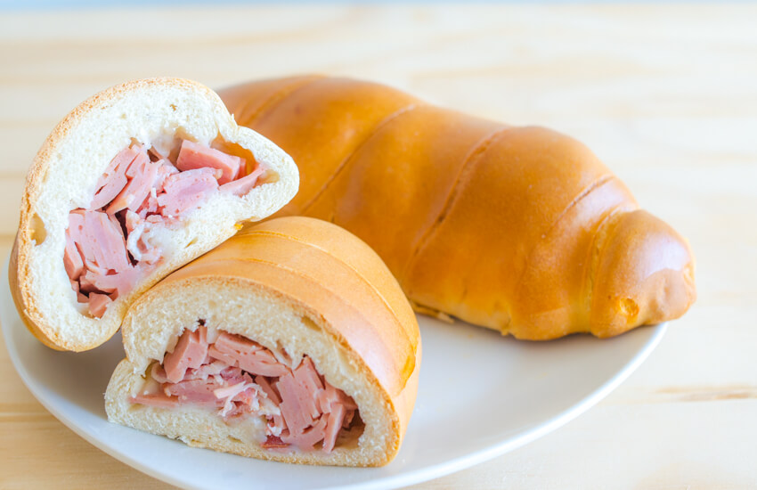

Receta de Cachitos de jamón
Para preparar tus cachitos de jamón necesitarás:
- 500 grs de harina de trigo
- 250 ml de agua
- ½ cucharada de sal
- 50 grs de azúcar
- 25 grs sde levadura fresca
- 50 grs de mantequilla
- 1 huevo
- 250 grs de jamon rebanado finamente cortado
- 150 grs de tocineta rebanada finamente cortada
- 2 huevos batidos
Preparación
- En un mesón, coloque la harina en forma de corona, en el centro añada la sal, azúcar, levadura, mantequilla y el huevo, mezcle con las manos, y agregue el agua tibia poco a poco, vaya mezclando, agregue la esencia de queso y continúe amasando por unos 10 minutos, ó hasta que obtenga una masa suave y elástica. Deje reposar cubierta con un paño limpio y húmedo.
- Aparte, en un bol mezcle el jamón, la tocineta y la mantequilla. De ser necesario, agregue un puntico de sal. Reserve refrigerado.
- Una vez pasado por lo menos treinta minutos, tome la masa y sáquele los gases, amásela de nuevo y corte trozos de unos 50 grs cada uno, estírelos con ayuda de un rodillo en forma triangular, colocando los triángulos en una superficie engrasada.
- Cómo se hacen los triángulos? Estirando la masa en forma de circunferencia, que se cortará como si fuera una pizza: primero en forma de cruz y luego en diagonal, para formar 8 triángulos. Cuando todos los triángulos estén estirados comience a armar los cachitos. Empiece colocando en la parte ancha del triángulo un poco de relleno. Cierre tapando bien el relleno y meta las puntas hacia adentro, enrolle con la punta sobrante del triángulo cuidando de enrollarla bien.
- Una vez los cachitos estén todos armados, llévelos al horno sin encender para que crezcan, una vez dupliquen su tamaño original, píntelos con huevo batido muy bien, lleve al horno a 350 grados hasta que doren.